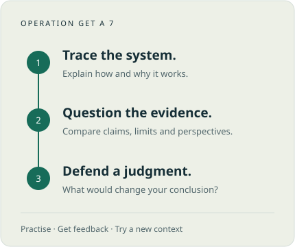

Understand the target.
Read the task and its criteria. Identify the knowledge and thinking you need to demonstrate.
Operation Get a 7
Understand how technology works. Test what the evidence supports. Explain what should happen next.
Find your next step ↓
One task at a time
This page shows the resources currently released for the class. More sections will appear as the course progresses.
Read the task and its criteria. Identify the knowledge and thinking you need to demonstrate.
Save source details, working notes and your decisions. Explain how you reached your answer.
Act on feedback. Show the improvement on a different question or changed situation.
Current sprint
Learn how computers and networks work, diagnose failures from evidence, and decide what a public service should restore first.
Open the workbook for all eleven lessons, lab assets, success criteria and released submission links.
Open Sprint 4 workbook — When the service goes offlineOlder practice resources. Open the task your teacher assigns; these are separate from the current Sprint 4 workbook above.
Watch one TED talk, build a study infographic, then rank your own IA sources and select a provisional top three.
Open practice — Four lenses → Criterion BReconnect Identity with Power, Systems and Values & Ethics through guided analysis, source work and independent transfer.
Open practice — Identity under the lensTurn a case into precise explanations, connected analysis and a reasoned evaluation. Includes guided practice and classroom criteria.
Open practice — Concepts & command termsInvestigate facial recognition, power and privacy. Build an evidence-supported response to a real-world issue.
Open practice — Who owns your face?Compare perspectives on an age restriction and defend a judgment about its consequences.
Open practice — Social media under 16Both paper styles begin in Sprint 1. Learn the criteria, practise with support, then show what you can do independently on a new task.
Short questions use task-specific marking. Extended responses use the applicable markband. Naming every concept is not a substitute for answering the question.
We start with a small source comparison and build toward sustained synthesis. A guided paragraph is practice, not a full-paper score.
A one-year SL pathway. Your teacher releases the detailed assignments as they are ready.
Mechanisms, data, networks, AI, media and the physical impacts of digital systems. Paper 1 and Paper 2 practice throughout.
A practice inquiry followed by Paper 1 and Paper 2 diagnostics, feedback and repair.
Protected research, analysis, production and permitted feedback time.
Fresh full papers, targeted repair and a focused final revision route.
Sprint 02
How can a platform protect young users while limiting new data and access costs?
Verification, estimation and inference; policy objectives; impact versus implication; conditional judgment.
An age-assurance recommendation supported by mechanism comparison, source synthesis and changed-context transfer.
Open workbook ↗Sprint 03
Who benefits when a feed optimizes attention?
Data lifecycle, databases, algorithm components, ranking, feedback loops, scale and algorithmic dilemmas.
Paper recommender, theme synthesis and an independently redesigned ranking rule.
Open workbook ↗